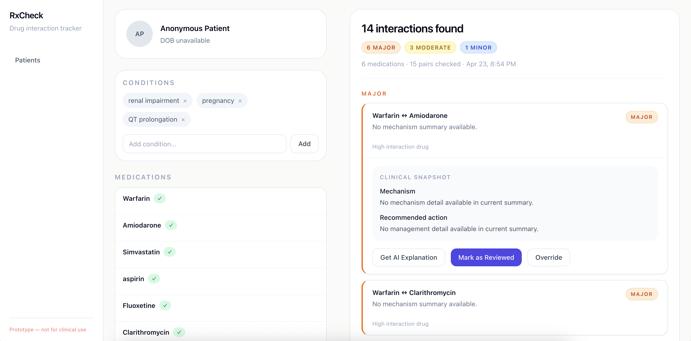
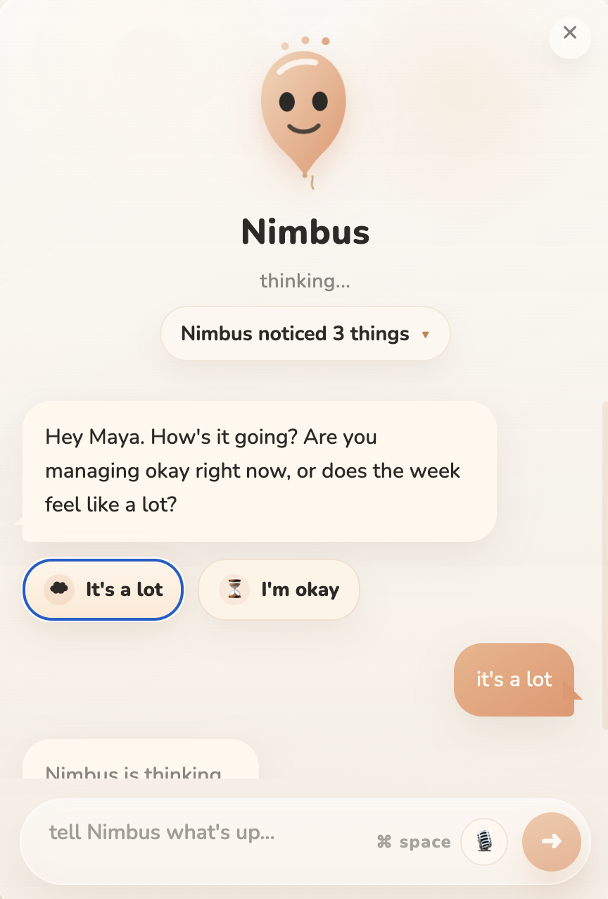

Policy-Scale Healthcare Data
Turned raw CMS enrollment files into evidence for Medicare Advantage strategy.
MS Business Analytics & AI Candidate • Johns Hopkins University
I build ML systems, AI products, and analytics pipelines that ship into real environments - a credit risk workflow with a full responsible-AI review, a live healthcare consulting engagement for a national nonprofit, a deployed consumer AI product, and a clinical decision support prototype. My background spans three countries and four working languages, and I care as much about whether the decision gets made as whether the model gets trained.
Policy-Scale Healthcare Data
Turned raw CMS enrollment files into evidence for Medicare Advantage strategy.
Plan Records Engineered
Built dual-year 2025/2026 master files across 208 columns for benefit analysis.
Audited Credit Model
LightGBM risk workflow with explainability, calibration, drift, and fairness checks.
Products Built End-to-End
FridgeChef, RxCheck, and Nimbus show product taste, backend architecture, and AI boundaries.
Positioning
Washington, DC based. Interested in machine learning, data science, analytics, AI product, and strategy-facing roles where technical depth, responsible deployment, and business communication all matter. Equally comfortable inside a Jupyter notebook, a FastAPI codebase, and a client meeting.
Turns ambiguous ideas into shipped FastAPI products, demos, and deployable workflows.
Uses model comparison, calibration, fairness checks, and cluster validation to avoid hand-wavy analysis.
Connects technical output to the decision a stakeholder, client, or product user actually needs to make.
Selected Case Studies
Built a production-minded ML workflow for credit risk using feature engineering, stratified cross-validation, SMOTE, model comparison, and a full responsible AI review spanning SHAP, LIME, fairness checks, and calibration.
Model comparison
OOF ROC-AUCInterpretability preview
SHAPTop features by SHAP mean absolute value
A live analytics engagement for the Alliance of Community Health Plans, a national nonprofit representing nonprofit and community-based health plans that advocates on Medicare Advantage policy in Washington. The analysis produces evidence that informs ACHP's policy positions on benefit design, market structure, and congressional advocacy - work that can influence how Medicare Advantage is regulated and therefore how millions of seniors receive care.
From CMS filings to policy position - how government data becomes evidence a Congressional staffer can cite.
Evidence chain
Raw signal -> Analysis -> DecisionRaw signal
Government and member filings
Analysis
What the data was actually asked
2025 and 2026 master files reconciled across schema drift
Supplemental benefit retention analyzed across six categories
k-means validated by elbow, silhouette, and Davies-Bouldin
Region-level and HMO vs PPO segmentation run separately
Decision
What the analysis produced
Year-over-year benefit reductions concentrated in categories where ACHP members differentiate from for-profit carriers.
Cluster structure shifts materially when HMO and PPO markets are segmented separately, surfacing positioning masked by a single national model.
Transportation and hearing benefit retention identified as advocacy-relevant differentiator - shaping client strategy for Congressional engagement.
Cluster validation
Elbow
Inflection identified and cross-checked before committing to k.
Silhouette
Cohesion and separation scored across candidate k values.
Davies-Bouldin
Third independent criterion confirms the chosen segmentation.
ACHP's policy positions are read by Congressional staff working on Medicare Advantage legislation. Analysis quality here is not a coursework question - it has to hold up when a benefit retention number is cited in a markup.
Built and deployed an AI consumer product that turns fridge photos, receipts, and saved inventory into personalized recipe workflows through a stateless architecture, streaming UX, and multi-provider model routing.
Architecture flow
Model routing by input type + cost


A clinical decision support prototype where the interesting engineering is not the AI, it is the data model and the boundary drawn around what the AI is allowed to do. Deterministic interaction checks run against a locally-imported clinical database; an LLM layer produces plain-English explanations under strict RAG with schema-validated output. Designed with FDA Non-Device CDS criteria in mind so a pharmacist can always see the basis of every alert.
Data model boundary
RxCheckDataModelSchema validation
Every LLM response validated before display. Failed responses logged, never surfaced.
Audit trail
Frozen run snapshot per check. Append-only override log. Prompt versioning for reproducibility.
A warning system that cries wolf is worse than one that is silent. The design discipline here - tiered severity, per-patient acknowledgments, severity-escalation detection, gated DDSI on recorded conditions - exists because alert fatigue is the failure mode that actually matters in a pharmacy workflow.
Built Products
A consumer-facing AI workflow that turns fridge photos, receipts, and kitchen inventory into usable meal planning rather than one-off generation demos.
What was hard
The strongest version of this section should explain one technical tradeoff in detail, such as why the routing logic exists or how the streaming experience was made responsive without overcomplicating the product.

Deterministic interaction checks plus a bounded LLM explainer, built so the data model stays the source of truth.
"LLM as explainer, not source of truth"

A local demo scaffold for a student-facing AI companion, including backend structure, seeded data, and the foundations for a gentler product experience.
Supporting work also spans Tableau dashboards, Monte Carlo simulation, and healthcare database design.
See also: Tableau dashboards, Monte Carlo simulation, healthcare database design ->About
I am an MS Business Analytics and AI candidate at Johns Hopkins University, built on a global BBA background across Japan, Australia, and the United States. That path gave me something most technical candidates do not have - business intuition shaped by four languages and three working cultures, and the habit of translating between what a model says and what a stakeholder actually needs to decide.
Countries
Studied and worked across Japan, Australia, and the United States.
Languages
Used in academic, professional, and client-facing settings.
Working Models Taught
Through workshops that turned classifier theory into demos, SHAP/LIME explanations, and applied confidence.
Recently the work has moved deeper in two directions at once. Technically: explainable ML with SHAP, LIME, calibration, and fairness auditing; live healthcare consulting with pipeline design and validated segmentation; agentic AI systems with multi-provider orchestration; and a clinical decision support prototype with a disciplined LLM boundary. Culturally and professionally: client-facing consulting for a national nonprofit whose findings reach Congressional staff, and a continued habit of being the person in the room who can both build the system and explain the decision.
Co-founded a Johns Hopkins analytics and AI organization, publish applied AI analysis, and lead Python and ML workshops focused on interpretable modeling.
Designed English communication programs for adult business professionals and maintained 95%+ retention.
Designed analytics, experimentation, dashboards, and data-informed strategy across international freelance engagements in Japan, Australia, and the US.
Core Capabilities
Machine Learning
LightGBM, XGBoost, CatBoost, H2O AutoML, logistic regression, random forest, Optuna, cross-validation, SMOTE, threshold optimization, calibration, and production-minded evaluation.
Responsible AI
SHAP, LIME, counterfactual reasoning, fairness auditing, Population Stability Index, Platt scaling, and model review practices for safer deployment.
AI Product Engineering
FastAPI, SQLAlchemy, asyncio, multi-provider LLM orchestration, RAG patterns, prompt engineering, SSE streaming, and Railway deployment across product-style AI builds.
Data Science & Consulting
SQL, Python, Tableau, experimentation design, k-means with multi-criterion validation (elbow, silhouette, Davies-Bouldin), cohort analysis, KPI framing, executive storytelling, and cross-cultural client communication.
Contact
If you are looking for someone who can move between machine learning, analytics, AI systems, and polished business communication, I would love to connect.
Business analytics, AI, product analytics, and strategy-facing internships or full-time roles.
Washington, DC
Johns Hopkins MS in Business Analytics & AI
Analytics that balance technical rigor, business framing, and clear communication.